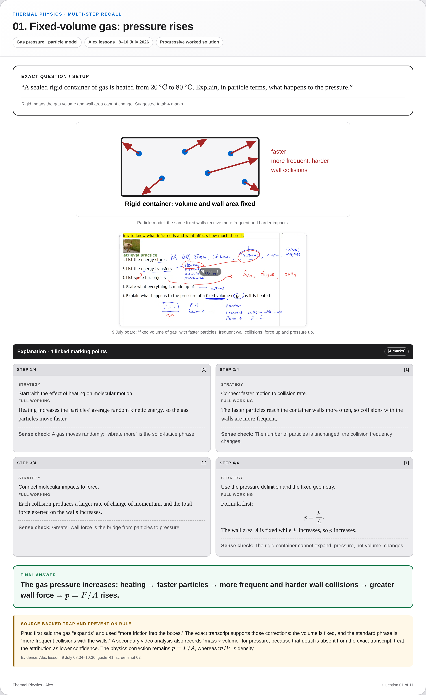
Alex Physics · 9–10 July 2026
Thermal Physics — Multi-Step Deck
Eleven source-audited question cards with exact lesson setups, progressive grey work boxes, mark allocations, diagrams, evidence-backed traps and corrected calculations.
11 question cards11 retina PNGsLocal staging only
{kind=link}
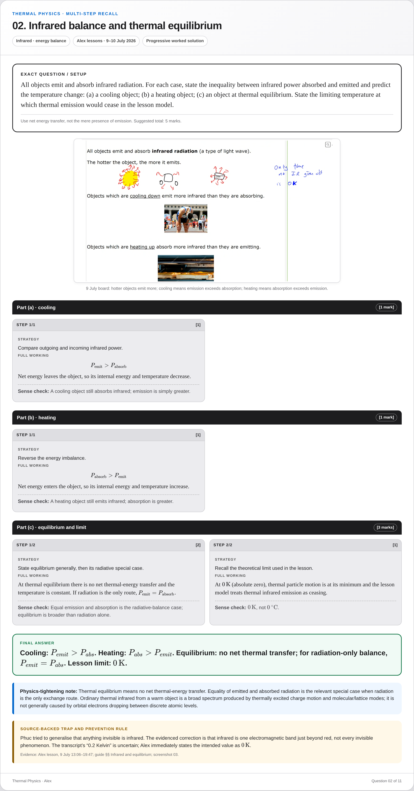
{kind=link}
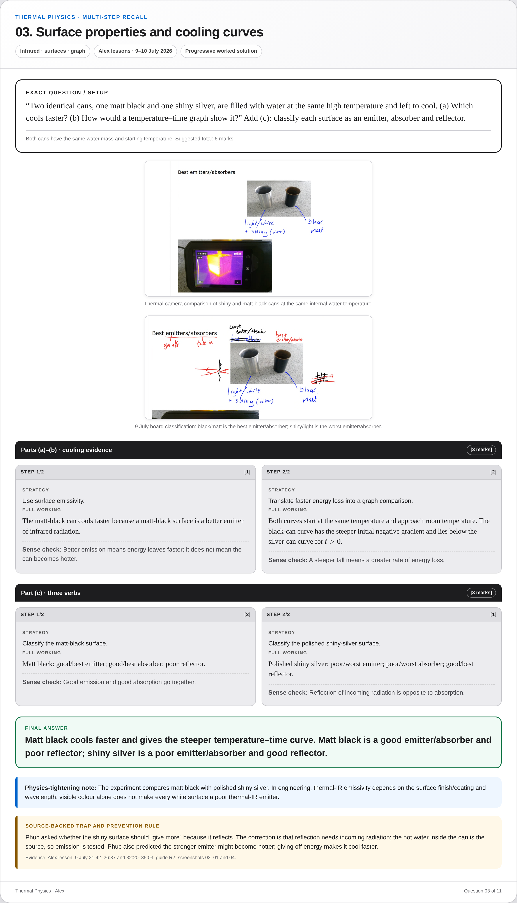
{kind=link}
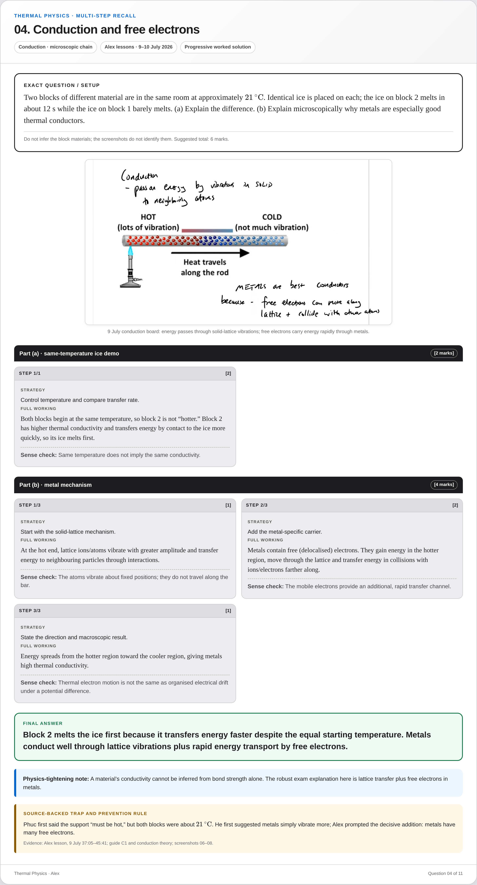
{kind=link}
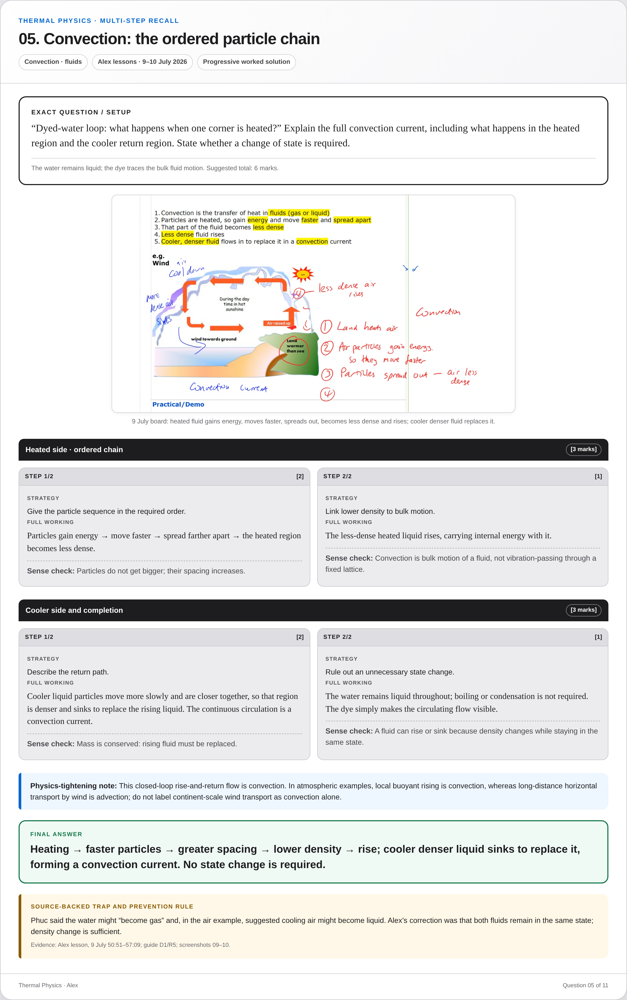
{kind=link}
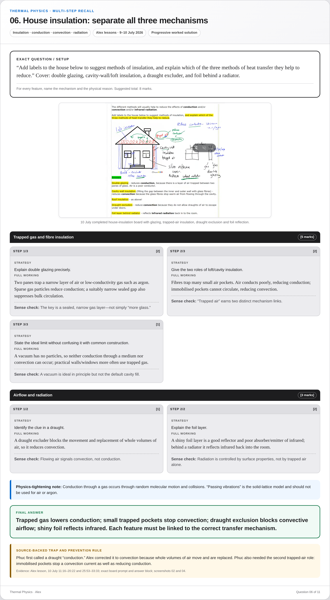
Question 06
House insulation: separate all three mechanisms
Insulation · conduction · convection · radiation
{kind=link}
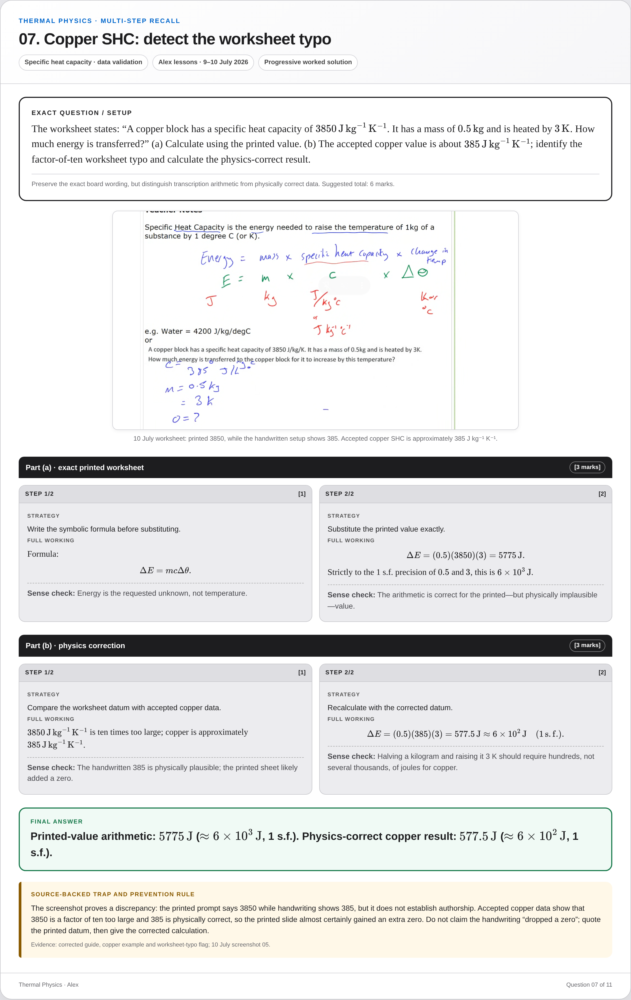
Question 07
Copper SHC: detect the worksheet typo
Specific heat capacity · data validation
{kind=link}
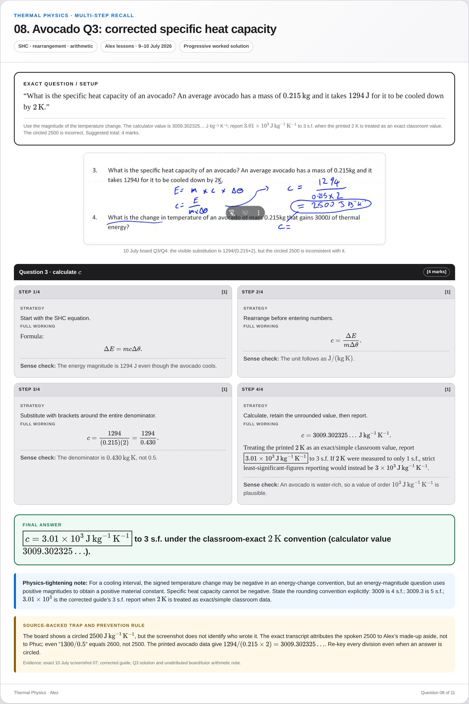
Question 08
Avocado Q3: corrected specific heat capacity
SHC · rearrangement · arithmetic
{kind=link}
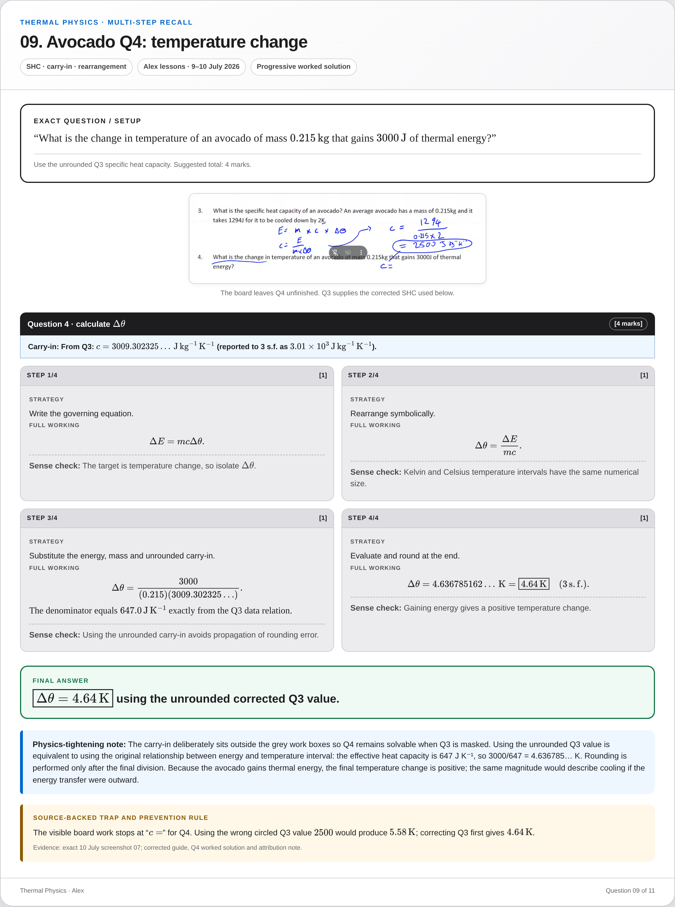
{kind=link}
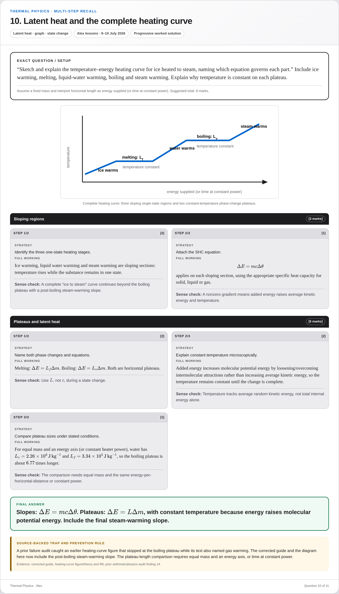
Question 10
Latent heat and the complete heating curve
Latent heat · graph · state change
{kind=link}
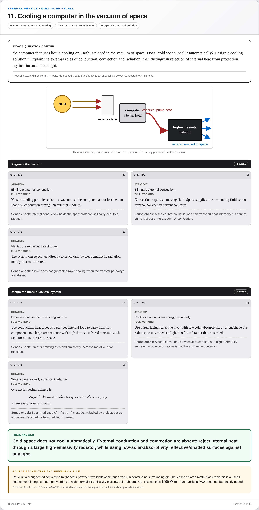
Question 11
Cooling a computer in the vacuum of space
Vacuum · radiation · engineering
{kind=link}
Coverage: fixed-volume pressure; infrared balance; surface properties; conduction and free electrons; convection; house insulation; copper SHC; corrected avocado Q3/Q4; latent heat and heating curves; vacuum/space cooling.